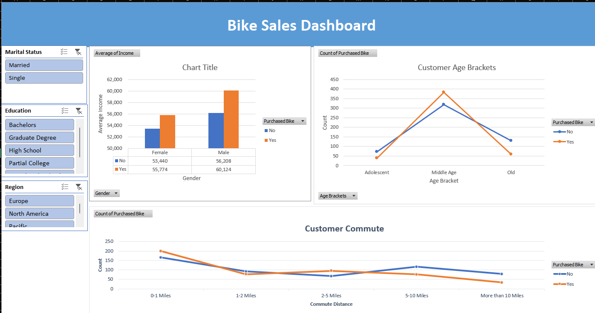

I am a passionate and research-driven professional with a strong background in robotics,
machine learning, and IoT solutions. I have recently earned an MSc in Robotics and Smart Technologies at Staffordshire University, where I developed advanced expertise in control systems, embedded programming, and AI-driven applications.
I am seeking to further explore advanced research in robotics, focusing on smart control systems and machine learning for autonomous applications. With an ability to blend theoretical knowledge with practical implementation, I am driven to contribute to impactful research that advances the field of robotics while collaborating with
technical experts in a dynamic academic environment.

This analysis was built to help a potential Airbnb host answer the golden question: "How much can I actually make?" Using a dataset split into three tables—listings, reviews, and calendar—I explored patterns using Tableau.

This project explored a dataset collected via an online survey of data professionals, covering
everything from job roles to satisfaction with work-life balance. The aim was to present the
experience and realities of data careers in an intuitive dashboard.

In this project, I took on the challenge of cleaning a real-world dataset of global layoffs using SQL—a
key part of preparing data for deeper analysis. The raw data had no primary key, inconsistent
entries, and a lot of duplication.

This project began with a dataset of individuals and whether or not they purchased a bike. It
included features like marital status, commute distance, home ownership, region, gender, and number
of children. I approached it like a business case—what insights can help a company understand its
bike-buying customers?.

Expanding on the IoT fire detection system, I developed a cloud-integrated machine learning
extension that predicts fire outbreaks from visual data...

This project combines machine learning, IoT, and full-stack development to support preventive
healthcare. I built a system to predict hypertension (a key risk factor for heart attacks) using
both user-provided lifestyle data and real-time sensor inputs.

Fires remain a major cause of residential fatalities, especially when no one is home to respond to a
traditional alarm. To tackle this, I built a fire detection system using IoT and automation
technologies that not only detects fire outbreaks but also sends emergency alerts to homeowners and
relevant authorities via the internet.

Donec eget ex magna. Interdum et malesuada fames ac ante ipsum primis in faucibus. Pellentesque venenatis dolor imperdiet dolor mattis sagittis magna etiam.